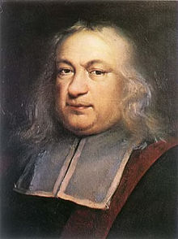

Fue inventada por René Descartes y por Pierre Fermat, a principios del siglo XVII, y como vimos, relaciona la matemática y el álgebra con la geometría por medio de las correspondencias anteriores.
Además, Descartes y Fermat observaron, y esto es crucial, que las ecuaciones algebraicas corresponden con figuras geométricas. Eso significa que las líneas y ciertas figuras geométricas se pueden expresar como ecuaciones y, a su vez, las ecuaciones pueden graficarse como líneas o figuras geométricas.

Rene descartes
La idea central de toda la Geometría Analítica consiste en establecer un vínculo entre objetos geométricos y números, de tal manera que los problemas geométricos se puedan expresar de manera algebraica (analítica) y que muchos problemas algebraicos puedan encontrar una interpretación geométrica. La idea de establecer este nexo permite por un lado, representar en forma algebraica objetos puramente geométricos, con lo cual todo el arsenal de herramientas del álgebra se puede aplicar a la geometría.
El estudio de la astronomía y la cartografía, tratando de determinar las posiciones de estrellas y planetas en la esfera celeste, sirvió como importante fuente de resolución de problemas geométricos durante más de un milenio. René Descartes desarrolló simultáneamente el álgebra de ecuaciones y la geometría analítica, marcando una nueva etapa, donde las figuras geométricas, tales como las curvas planas, podrían ser representadas analíticamente, es decir, con funciones y ecuaciones. La geometría se enriquece con el estudio de la estructura intrínseca de los entes geométricos que analizan Euler y Gauss, que condujo a la creación de la topología y la geometría diferencial.